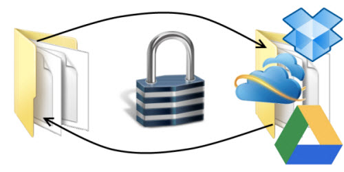
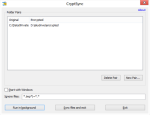
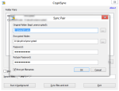

CryptSync
CryptSync is a small utility that synchronizes two folders while encrypting the contents in one folder. That means one of the two folders has all files unencrypted (the files you work with) and the other folder has all the files encrypted.
The synchronization works both ways: a change in one folder gets synchronized to the other folder. If a file is added or modified in the unencrypted folder, it gets encrypted. If a file is added or modified in the encrypted folder, it gets decrypted to the other folder.

This is best used together with cloud storage tools like SkyDrive, DropBox or Google Drive.
If you want to use such cloud storage for backups, it's a good idea to keep your private data really private. That means only uploading encrypted files to make sure no one else can access your data. Because even if the companies behind the cloud storage guarantee your privacy, it's always possible that your account gets hacked: so make sure you use a different password to encrypt the data with CryptSync than you use to login to your cloud storage provider!
If you want to backup and encrypt your files to more than one cloud storage (just to be safe), you can do that as well: just set up two sync pairs with the original folder being the same for both pairs.
CryptSync works by synchronizing folder pairs. One folder is called the original folder: that's where your unencrypted files are stored and where you work with your files. The second folder of such a pair is the encrypted folder which is where the files get copied from the original folder and encrypted. The encrypted folder is usually located somewhere inside your cloud storage sync folder.
The encryption is done using 7-Zip, which also compress them at the same time. That means you not only get encryption but also compression for free, which reduces the storage space you use in the cloud.
That also means that if you ever need to access your encrypted files directly from the cloud, you can save them locally and just open them with 7-Zip or other compression tools. Of course you'will then be asked to provide the password you used with CryptSync to open that file.
When you first start CryptSync, the main dialog is shown where you have to set up the folders to synchronize.
{kind=link}
To add a folder pair, click on the button and then enter the paths to both folders. Then enter the password that will be used to encrypt and decrypt your files.
{kind=link}
Since even filenames can reveal private information, you can have CryptSync also encrypt the filenames. But remember that if you activate this option, you won't be able to tell what file is what if you ever need to access them from your cloud storage providers web interface. Names of subfolders are encrypted as well.
Long paths
When encrypting the file and folder names, you have to make sure that the original file and folder names are not longer than about 120 characters. Because encrypting those names approximately doubles their length, and Windows has a limit of 255 chars per file or folder name.
The main dialog has three buttons to dismiss it:
- Run in background
- This is the default. CryptSync will run in the background and monitor all the folder pairs for changes. Once it detects a change, it will automatically synchronize that change immediately. This is also the only way to detect deletions of files.
- Sync files and exit
- This will synchronize all folder pairs while showing you the progress of the synchronization. Once all folders are synchronized and up to date, CryptSync will exit and not run in the background.
- Exit
- Closes the dialog and quits CryptSync. It will not keep running in the background.
Command Line Options
CryptSync can also be used from the command line. The following options are available:
- /src:"path"
- specifies the path to the source folder where the unencrypted files are located. This parameter is not optional!
- /dst:"path"
- specifies the path to the destination folder where the encrypted files are located. This parameter is not optional!
- /pw:"password"
- specifies the password used for the encryption
- /cpy:"pattern"
- file pattern of files that are copied only, not encrypted
- /nsy:"pattern"
- file pattern of files that are not synched at all
- /encnames
- if specified, the file and foldernames are also encrypted in the destination folder
- /mirror
- if specified, the source folder is synched to the destination folder but changes in the destination folder are not synchronized back to the source folder
- /use7z
- use .7z extension instead of .cryptsync
- /fat
- use FAT write time accuracy (2seconds)
- /ignore:"ignore|pattern"
- specifies the ignore patterns to use. If not specified, the ignore pattern that has been set before is used.
- /progress
- if specified, a progress dialog is shown during the synchronization
- /syncall
- syncs all set up folder pairs, then exits
- /logpath:"path"
- specifies the path to the log file
- /maxlog:nnn
- specifies the maximum number of lines the log file will grow to
- /tray
- starts CryptSync in background, no dialog is shown